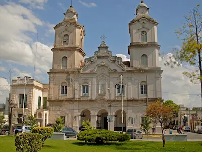

Francisco L. Gandiola
About me
My name is Francisco, but feel free to call me Fran (some classmates used to call me "Chino"). I was born and raised in Pilar, a small city located at the northwest of Buenos Aires. Nowadays I work as an in-field mentor for the Missionary Training Center. I live with my three younger sisters, though I am planning to move out at the end of the year. I enjoy to play sports and tabletop games with friends, to appreciate nature, and to learn more about spiritual and secular matters.

Pilar City

Pilar is part of the Greater Buenos Aires urban conurbation and is the seat of the administrative division of Pilar Partido. It is located about 51 km northwest of downtown Buenos Aires. The city has a population of nearly 52,000.